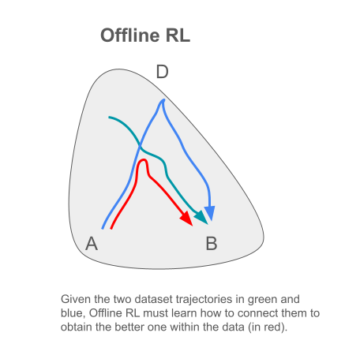

%%capture
%load_ext autoreload
%autoreload 2
%matplotlib inline
%set_random_seed 12
Offline RL theory#
Main issues#
Can techniques from online RL, known for solving complex problems effectively, be applied to offline RL?

In off-policy online RL, we use a replay buffer to store \((state, action, reward)\) data, updating it as the learned policy improves. Why not apply an off-policy algorithm, filling the replay buffer directly with collected data.
This is just a qualitative parallelism, and offline RL will work even if the data in your replay buffer is far from optimal.
However, even though both approaches seem similar, off-policy methods won’t be able to work with collected data directly.
A bit of review:
In particular many off-policy RL algorithms make use of the following approach:
with:
where \(D\) is the replay buffer, which in the offline RL case will be filled with the collected dataset.
As seen in the (Evaluation) step, the only potential out-of-distribution (o.o.d) issue arises when computing action \(a'\), as all other values (\(s\), \(a\), \(s'\)) are from the dataset \(D\).
If during the evaluation loop:
the policy, \(\pi_\theta(.|s)\), samples o.o.d. actions like \(a'_4\) in the figure, as we don’t know the rewards on o.o.d. regions, \(Q(s',a'_4)\), would be unpredictable.
If by chance, \(Q(s',a'_4)\), is higher than that of in-distribution actions like, \(a'_0, a'_1, a'_2\), this overestimated misinformation will propagate into the improvement step:
as, during improvement, we try to find the policy that maximizes \(Q(s,a)\). Therefore, the policy will have a tendency to go o.o.d. quite often.
This could be catastrophic during inference!!
The figure below illustrates the problem of overestimating Q-values in the off-policy Soft Actor Critic (SAC) algorithm on the half-cheetah environment.
In online RL, overestimation is addressed through exploration, which is not possible in offline methods
Note: If we replace \(a'\) with the dataset value in the evaluation step, we would learn \(Q^\beta(s,a)\), the Q-value of the behavior policy. However, this would lead to the learned policy in the improvement step being generally far from optimal, especially when dealing with suboptimal data as is common in real scenarios.
The other important aspect of the offpolicy method introduced earlier is that it implements a dynamic programming approach that is responsible for implementing the “stitching” property, which is crucial for connecting suboptimal trajectories into optimal ones.
Summary#
Off-policy methods are strong candidates for offline RL. They assume a replay buffer, and if they implement a dynamic programming approach, they are suited to combine pieces of different trajectories into a new, better one.
However, they suffer from the overestimation problem when applied to data, which can cause the algorithm to easily go out of distribution.
Let’s go to the exercises in nb_95
Addressing out of distribution issues#
Overview#
The idea is to constraint the learned policy “to be close” to the behavioral one while still introducing a controlled distributional shift to enhance the policy without going out of distribution. This balancing act is a significant challenge and a focus of ongoing RL research.
In other words, you want the learned and behavioral policies to differ on \(D\); for example, we don’t want to exclude state-action pairs that may appear infrequently (few expert data) but could lead to higher-reward trajectories, especially considering that these states may likely appear during inference (see figs. a-b).
But at the same time, we also want the policies to be close enough near to o.o.d. regions for the reasons already discussed (fig-c).
Note: This type of control over missing and o.o.d. data is something that cannot be achieved with imitation learning.
To attain the aforementioned goals, offline RL algorithms can be classified into three primary categories:
I - Policy constraint
II - Policy Regularization
III - Importance sampling
I - Policy constraint methods#
One option we have to encourage to copy the expert knowledge in the data but restrict undesired o.o.d. situations is to constraint the learned policy to mimic the right behavior observed in the data.
a) Non-implicit or Direct#
We have access to the behavior policy, \(\bf \pi_\beta\)
Since we already have \(\pi_\beta\), we can constrain the learned and behavioral policy using:
where the Kullback-Leibler divergence, \(D_{KL}\), is defined as:
To summarize: The \(D_{KL}\) divergence discourages undesired o.o.d actions, as in case (b), yet encourages important o.o.d actions, as in case (a), crucial for enhancing the learned policy. This ensures that state distributions \(d_{\pi}(s)\) and \(d_{\pi_{\beta}}(s)\) are close around a given state \(s\), so the distributional shift won’t be too large. In contrast, case (b) will typically exhibits a large distributional shift.
Moreover, actions such as \(a_4\), in fig.2a, may guide our agent to highly rewarding regions, as illustrated in the figure below.

These methods typically use the evaluation-improvement approach, introduced before, plus the \(D_{KL}\) constraint:
Technical comment: We could incorporate this constraint as a Lagrange multiplier, or sometimes it is absorbed in the evaluation and improvement steps:
that produces similar results, with the advantage that is much easier to implement from a technical point of view.
But what happens if we need to deviate considerably from the behavior policy, as can happens in realistic situations where the data collected is far from optimal?.
Let’s analize the simple example in the fig. below:
where all data is in-distribution. Still the \(D_{KL}\) constraint distribution will copy the bad behavior of \(\pi_b\) .
What about constraining the policy support? In other words, we don’t focus on the probability of action \(a\) within the dataset, but only on whether that action is included in the dataset.
This is usually a good idea: Just constrain only allowed actions and let the algorithm find the action probabilities through the evaluation-improvement equations.
Summary
Direct constraint methods assume you have access to the behavior policy.
They are typically of two kinds:
Constraint on distribution: easy to implement and generally effective, but they can sometime be too conservative.
Constraint on support: a good choice when the behavior policy deviates significantly from optimality.
b) Implicit#
We don’t need \(\pi_\beta\), and we can work directly with our data \(D\). Useful in complex high dimensional spaces where the BC of the behavioral policy is not accurate.
First we assume that we have \(\pi_\beta\) (we will integrate it out later). We maximize the difference reward:
so as higher \(\eta(\pi)\) the better \(\pi\) .
Note: This is a slightly different idea than what we usually follow to find the policy that maximizes the discounted reward.
It can be shown that (2) can be written as:
with \(A^{\pi_\beta}(s, a) = Q^{\pi_\beta}(s, a) -V^{\pi_\beta}(s)\) the Advantage function.
As we will shown next, eq.3 will give us the optimal policy.
Let’s try to understand eq.3:
In summary, eq.3 implies finding a policy \(\pi(a|s)\) that generates state-action pairs \((s_0,a_0)\) (constrained through the \(D_{KL}\) to be close to the dataset) that lead to trajectories in our dataset with maximum reward. In other words, we are trying to find the optimal policy within the data.
Let’s jump to the final solution of eq.3. If you are interested in more mathematical details see the slide below. The optimal policy, \(\hat{\pi}_\theta (a|s)\), is:
Interpretation: the maximization operation in eq.4 implies that \(\pi_\theta(a|s)\) will be maximum in state-action pairs within or close to \(D\), but only if \((s,a)\) brings the agent to a high reward region, i.e., if \(\exp\left(\frac{1}{\lambda} A^{D}(s, a)\right)\) (or \(A^{D}(s, a)\)) is high.
This is in perfect agreement with out previous interpretation in fig.5.
Finally, note that to compute equation 3, we need \(Q^{\pi_\beta}(s, a)\), so we could use the dynamic programming evaluation step introduced before, where eq.4, plays the role of the improvement step..
ALERT!! : Only if you are interested in the math:
It is easy to see that the solution to eq.3 is:
\( \pi^*(a|s) = \frac{1}{Z(s)} \pi_\beta(a|s) \exp\left(\frac{1}{\lambda} A^{\pi_\beta}(s, a)\right) \quad \text{with } \lambda \in R \tag{4}. \)
were \(\lambda\) comes from a Lagrange multiplier that take into accounts the \(D_{KL}\) constraint.
Again eq.4 means that \(\pi^*(a|s)\) is given by the probability of finding \((s,a)\) in the dataset (i.e. \(\pi_\beta(a|s)\)) times the probability that \((s,a)\) drives the agent to a high cumulative reward (\(~ \exp\left(\frac{1}{\lambda} A^{\pi_\beta}(s, a)\right)\)).
Finally, if we approximate our theoretical optimal policy \(\pi^*(a|s)\) by a DNN \(\pi_\theta (a|s)\), we can use an SVI approach:
where the sampling is through \(\pi_\beta\) that we can replace by the collected dataset:
Summary:#
Policy constraint methods are able to fill gaps in the collected data to guide the agent to high-reward regions while also discouraging o.o.d. behavior. This can be achieved by constraining the density or the support of the policy, if you have access to the behavior policy. If you don’t, methods like implicit policy constraints could be the way to go.
Policy constraint methods are powerful, but they can often be too pessimistic, which is undesirable. For example, if we know that a certain state has all actions yielding zero reward, we should not constrain the policy in this state, as could affect our neural network approximator.
An alternative approach to avoid o.o.d actions without directly constraining the policies is to control o.o.d behavior from a Q-function perspective.
II - Policy Regularization methods#
This approach involves regularizing the value function directly, aiming to prevent overestimation, especially for actions that fall outside the distribution seen during training
Advantages:
Applicable to different RL methods, including actor-critic and Q-learning methods.
Doesn’t necessitate explicit behavior policy modeling.

Main idea: introduce a new policy \(\mu(a|s)\) that attempts to find the actions \(a\) maximizing the DNN \(Q_\phi\), while simultaneously minimizing \(Q_\phi\) within the \(\phi\) parameter space. This effect is particularly crucial for o.o.d. actions, which are generally overestimated, as previously observed.
The policy \(\mu\) doesn’t necessarily have to be proportional to \(\pi(a|s)\), but it should aim to maximize Q(s,a).
These are some popular offline RL algorithms, but the list is longer:
It’s worth noting that most of these algorithms fall into the categories we’ve already discussed, namely policy constraint and policy optimization methods
Appendix: Short review of some popular offline RL algorithms#
Introduction#
In this notebook, we will explore several key algorithms that aim to address distributional shift issues within offline reinforcement learning. It’s worth noting that the field of offline RL is evolving rapidly, and this list is by no means exhaustive. Many of the concepts and strategies employed by these algorithms find applications and improvements in various other approaches.
A common approach followed by many algorithms in offline RL involves an actor-critic methodology. Within this framework, there is an iterative process of evaluation and improvement, characterized by:
So the main idea is to modify the Evaluation/Improvement steps to improve the distributional shift problems.
Batch Constrained deep Q-learning (BCQ) algorithm#
The main idea is pictured in the figure below.
In BCQ, the policies \(\pi\) and \(\pi_\beta\) are not constrained by the \(D_{KL}\) divergence, but we still ensure that \(\pi(s)\) generates similar actions to \(\pi_\beta(s)\) through a generative model, in this case, a Variational Autoencoder (VAE), \(G_\omega\):
Therefore, this method falls under the direct policy constraint approach discussed earlier.
The BCQ algorithm uses a clipped Double Deep Q-Learning (clipped-DDQ) approach to compute the Q-values:
with
The minimum is taken to avoid the overestimation of Q-values, an issue that also occurs in these kinds of methods in online RL. In offline RL, as we saw, o.o.d. actions are the ones that typically produce such overestimations. Therefore, clipped-DDQ also introduces control over this issue at the Q-value level, achieving a similar effect to what policy regularization methods aim for with a lower bound on Q-values.
A few technical details:
The actions in eq. 7 are clipped with some noise \(\epsilon\), hence the name clipped, as this also helps to avoid overestimation of Q-values.
We allow actions with high Q-values to introduce some uncertainty, helping the algorithm explore regions of lower reward to avoid overestimation effects.
Finally, as running a VAE during training can be computationally expensive, the algorithm introduces a perturbation model \(\xi_\phi(s, a_i, \Phi)\), which outputs an adjustment to an action \(a\) in the range \([-\Phi, \Phi]\). Therefore, eq.7 becomes:
Note that if \(\Phi=0\) and \(n=1\) the policy will resemble behavioral cloning. On the opposite side if d \(\Phi \rightarrow a_{max} - a_{min}\) and \(n \rightarrow \infty\), then the algorithm approaches Q-learning, as the policy begins to greedily maximize the value function over the entire action space.
Pros: As it learns how to generate new actions not included in the dataset, it is suitable for small datasets and for unbalanced sets where a few unrepresented actions could be important for the task to be solved.
Cons: Since BCQ generates actions from a VAE, if the dataset used to train it underrepresents some important actions, the VAE may struggle to generate meaningful actions around those states, making the discovery of new or unconventional actions difficult. This is one of the limitations of constrained policy approaches.
Conservative Q-Learning (CQL) algorithm#
CQL follows a pessimistic approach by considering a lower bound of the Q-value. In the paper the authors shown that the solution of:
\(\hat{Q}^{k+1}_{\text{CQL}} \gets \hbox{argmin}_Q \left[ \color{red} {\alpha\big(\mathbb{E}_{s \sim \mathcal{D}, a \sim \mu}[Q(s,a)] - \mathbb{E}_{s,a \sim \mathcal{D}}[Q(s,a)]\big)} + \frac{1}{2} \mathbb{E}_{s,a \sim \mathcal{D}} \Big[\big(Q(s,a) - \mathcal{B}^{\pi}Q(s,a)\big)^2\Big] \right].\)
for \(\mu = \pi\) is a lower bound for the Q value.
The nice thing about this method is that it can be applied to any Actor Critic method in a few lines of code.
CQL Focuses on conservative value estimation to provide lower bounds on the expected return of a policy. Aims to reduce overestimation bias and ensure that the policy remains within a safe region of the state-action space. Achieves safe exploration by constructing action sets that cover a broader range of state-action pairs. Well suited for scenarios where safety is a top priority, as it reduces the risk of catastrophic actions.
Note that BCQ could be better to discover novel actions and to use the collected data more efficiently but may not guarantee complete safety!.
Implicit Q-Learning (IQL) algorithm#
This is another clever idea to avoid going out of distribution. Let’s revisit the ideas for evaluation improvement, assuming that we only operate with state-action pairs from the dataset in a SARSA-style approach, i.e.:
This is indeed a valid approach. It’s important to note that running the evaluation-improvement loop makes sense only once. During evaluation, we compute the \(Q\)-values of the behavior policy and derive the optimal policy based on those \(Q\)-values in the improvement step. Further iterations would be futile since we are limited to the fixed dataset.
However, this idea often falls short in finding an optimal policy for many real-world problems. Intuitively, if our data is suboptimal, the Q-values derived from that data will also be suboptimal.
The core principle of IQL is to utilize a pessimistic Q-value lower bound during evaluation, similar to policy regularization, while also ensuring consistency with in-distribution data. This strategy enables a multi-step process, facilitating multiple evaluation-improvement iterations. With each iteration, a new estimate for Q(s,a) is derived, encouraging a deeper exploration of the Q-functions and enabling the capture of broader correlations.
These are the main steps involved in the IQL approach:
and for the policy improvement step, it uses an advantage weighted regression:
similar to eq.4 . The lower bound used here is the ‘expectile’ shown in the figure below.
Q-Transformer#
Adapts the bellman equations to deal with a transformer architecture: paper and blog
References#
Schulman et al. 2017 - Trust Region Policy Optimization
Kumar et al. 2020 - Conservative Q-Learning for Offline Reinforcement Learning
Peng et al. 2019 - Simple and Scalable Off-Policy Reinforcement Learning
Nair et al. ‘2020 - AWAC: Accelerating Online Reinforcement Learning with Offline Datasets